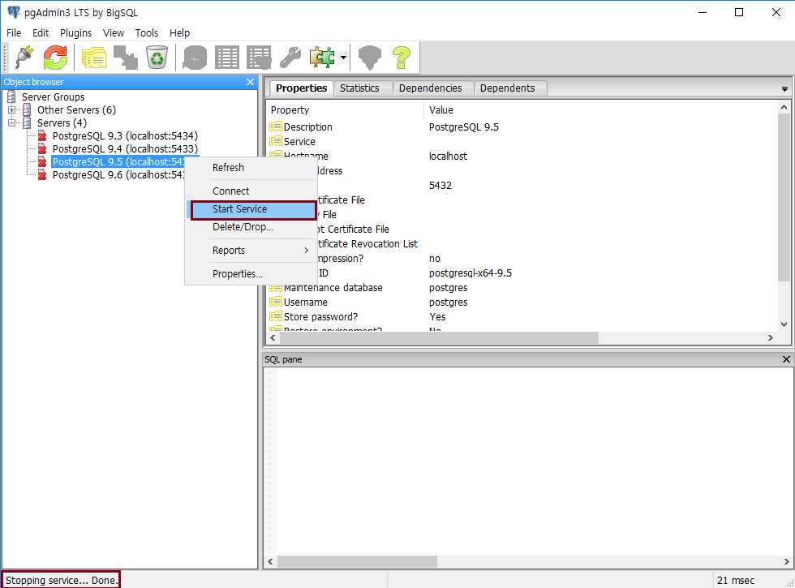

PostgreSQL 데이터베이스 관리
디스크 확장 (Tablespace 링크)
새로운 하드 디스크를 추가했을 때 사용할 수 있는 유용한 방법이다. 또한, Disk 가 Full 났을 때 사용할 수 있다.
예를 들어 고객사에서 250GB C:\ 에 PostgreSQL 을 사용하고 있다가 1TB 짜리 D:\ 를 추가한다고 가정했을 때, DB 를 C:\ 에서 D:\ 로 옮기는 작업을 요청했다고 하자.
C:\ 에서 D:\ 로 옮기는 방법은 여러가지가 있을 수 있는데, 그 중 백업 후 D:\ 에 Tablespace 를 만들어 복원하는 방법이 가장 안전하다.
하지만 백업하는 데 시간도 오래 걸리고, C:\ 에 용량도 많지 않은 상황일 경우 PostgreSQL Tablespace 의 특징을 이용한 방법을 사용할 수 있을 것이다.
PostgreSQL 디렉토리 구조
에서 PGDATA\pg_tblspc 디렉토리에 Tablespace 의 실제 경로를 가리키는 링크 파일이 있다고 했었다.
그렇다면 실제 Tablespace 물리적 파일을 D:\ 에 복사 후, 링크만 변경해 주면 백업, 복원의 절차 필요없이 디스크 이동을 할 수 있다.
Tablespace 링크 이동 방법
Tablespace 의 OID 를 알아낸다. (test Tablespace 의 OID 는 73054)
PostgreSQL 서비스를 중지한다.
PGDATA\pg_tblspc 경로로 가서 OID (73054) 가 있는지 확인한다.
test Tablespace 만든 경로(C:\temp)로 가서 디렉토리를 D:\temp 로 복사한다. (권한도 부여 해야 함)
윈도우인 경우 Junction (
다운로드 링크
) 이라는 프로그램으로 링크를 만들어 준다.
PGDATA\pg_tblspc\74054 를 임의명으로 rename 하고 다음 명령을 실행하자.
$ junction64.exe "C:\Program Files\PostgreSQL\9.5\data\pg_tblspc\73054" "D:\temp"
PostgreSQL 서비스를 시작한다.

SELECT 쿼리 등을 수행하여 정상적인지 확인한다.
Let's Prcactice
리눅스에서도 동일한지 확인 해보자.
Tablespace 링크 변경하고 Tablespace 를 삭제했을 경우, 물리적으로 삭제가 되는지 확인해보자.
처음으로
이전
다음